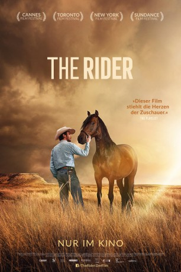

#9570 The Rider
 
 IMDB-Wertung: 7.4 / 10
IMDB-Wertung: 7.4 / 10  Metascore: 92
Metascore: 92 
Nach einem beinahe tödlichen Rodeo-Unfall muss sich der junge Cowboy Brady Blackburn mit der Tatsache abfinden, dass er nie wieder reiten kann, und stürzt in eine existentielle Identitätskrise: Immerhin definiert ihn nicht nur seine Umwelt, sondern vor allem auch er selbst als Sioux-Nachkomme sich vornehmlich über seine Arbeit mit Pferden. Schwer wiegen der abschätzige Blick seines Vaters, der Abschied von seinen enttäuschten Fans und das Fehlen des einzigartigen Gefühls der Freiheit, das ihn auf dem Rücken eines Pferdes durchströmt. Authentisch und einfühlsam hält der Film die Balance zwischen zärtlicher Poesie, archaischen Mythen und der rauen Lebenswirklichkeit im amerikanischen Heartland. Der tief berührende Film basiert auf den wahren Leben seiner Darsteller. THE RIDER wurde in Cannes mit dem Art Cinema Award sowie mit dem Werner Herzog Filmpreis ausgezeichnet, der Mut, Entschlossenheit und Visionen honoriert.
BDRIP DUBBED
Jahr: 2017
Dauer: 98 Minuten
FSK: 12
Land: USA Studio: Sony Pictures ClassicsTonspuren: DD2.0 - ,
Untertitel:
Auflösung: 1080p (1912x800) Größe: 3635 MB
Genre: Drama, Western
Regisseur: Chloé Zhao
Drehbuch: Chloé Zhao
Soundtrack: Nathan Halpern
Darsteller:
- Brady Jandreau als Brady Blackburn
- Cat Clifford als Cat Clifford
- Mooney als Gus
- Tim Jandreau als Wayne Blackburn
- Lilly Jandreau als Lilly Blackburn
- Leroy Pourier als Frank
- Tanner Langdeau als Tanner Langdeau
- James Calhoon als James Calhoon
- Lane Scott als Lane Scott
- Cameron Wright als Rodeo Cowboy #1
- Jordon Slick Phelps als Rodeo Cowboy #2
- Donnie Whirlwind Horse als Rodeo Cowboy #3
- Terri Dawn Pourier als Terri Dawn
- Allen Reddy als Bill
- Greg Barber als Bar Owner
- Kevin Hunter als Bar Patron #1
- Marshal Byrne als Bar Patron #2
- Frank Steele als Miles
- Ethan Steele als Miles'Son
- Helene Gaddie als Job Center Counselor
- Derrick Janis als Victor Chasing Hawk
- Todd O'Brian als Todd
- Gabrielle Waln als Gabby
- Griffin Grooms als Young Cowgirl
- Summer Boomer als Bartender
- Peppy als Apollo
- Jim als Apolla
- John Pfortmiller als Pawn Shop Owner
- Amanda Reddy als Doctor
- Alejandro Rama als Alejandro
- Adriano Rama als Adriana
- Steven DeWolfe als Rodeo Cowboy #4
Datei: X:\HD-Western-2000-2015\Rider, The (2017, FSK12, 1912x800).mkv seit 11.09.2018
Festplatte: HD Eastern+Western
 Es gibt insgesamt 61 Filme in der Gruppe 'HD-Western-2000-2015'
Es gibt insgesamt 61 Filme in der Gruppe 'HD-Western-2000-2015'